Chapter 14 A Basic Longitudinal Model
The focus of this lecture is to introduce longitudinal modeling with the multilevel modeling approach. Longitudinal MLM is a complicated statistic with decisions-to-be-made at every point. We will continue with the Lefevor et al. (2017) example that served as the research vignette for the preliminary investigation that preceded model building. In this lesson’s example, we will engage in model building that sequentially specifies and analyzes a within-persons (Level 1 [L1]) predictor of time, two between-persons (Level 2 [L2]) predictors of sexual identity and religious affiliation, and cross-level actions. We will also trim non-significant effects. In-so-doing, we examine the conceptual and technical aspects of multilevel modeling and assemble the model (and explore the data) in a systematic and sequential manner.
14.2 The Basic, Longitudinal, Multilevel Model
14.2.1 The definitional and conceptual
Singer and Willett (2003) tell us that the focus of this er is on “real-world issues of analysis” (p. 75). To that end, they introduce some complexities:
Composite model: Combines the
- L1 how each person changes over time, and
- L2 relates interindividual differences in change to predictors submodels into a single equation.
This composite model “leads naturally” to consideration of alternate methods of analysis
- generalized least squares (GLS)
- iterative generalized least squares (IGLS)
And within maximum likelihood * full * restricted
In addition to the exploration demonstrated the prior lesson, longitudinal model building should always start by fitting two models that provide essential baselines for subsequent comparison:
- unconditional means model
- unconditional growth model
There are multiple ways to add time-invariant (L2) predictors, to test complex hypotheses, and examine model assumptions and residuals. Additionally, we can get “model-based” estimates of individual growth trajectories that improve upon the exploratory OLS estimates we did completed in the prior lesson. In this example, the approach is somewhat streamlined because we are (a) specifying linear (not curvilinear) growth model, (b) using data that is balanced (everyone has the same number of waves), (c) using data with no missingness. We are using time-unstructured data. That is, while everyone has five waves, the amount of time (sessions) represented, ranges from 0 to 19.
14.3 Workflow for a Basic, Longitudinal, Multilevel Model
Multilevel modeling is a complex statistic with a number of considerations. At the risk of being an oversimplification, this workflow provides a rough map the steps involved in preliminary exploration and model building.

14.4 Research Vignette
We continue with the same research vignette used in the chapter that reviewed preliminary exploration of longitudinal data.
Our research vignette (Lefevor et al., 2017) examines the intersection of religious and sexual identities of clients in therapy. With 12,825 participants from the Center for Collegiate Mental Health 2012-2014 data set, the project is an example of working with big data. Because the data is available to members only (and behind a paywall), I simulated the data. In the simulation, categorical variables (e.g., sexual identity, session number, religious affiliation) were rendered as continuous variables and in the simulation, I needed to transform them back into categorical ones. Inevitably, this will have introduced a great deal of error. Thus, we can expect that the results from the simulated data will be different from those obtained by the authors.
The Method section of the article provides detailed information about the inclusion criteria ofr the study and the coding of the variables. This included data about the religious and sexual identities as well as a minimum of three separate scores on the Counseling Center Assessment of Psychologial Sympsoms (CCAPS, Locke et al., 2012) measure. For the final dataset, clients attended an average of 10.58 sessions (SD = 7.65) and had an average of 5.36 CCAPS administrations (SD = 4.04). This means that in the original dataset, each client was represented by a varying number of observations (likely ranging from 3 [the minimum required for inclusion] and, perhaps as many as 17 [adding +3SDs to the mean CCAPS administrations]). In simulating the data, I specified five observations for each of the 12,825 clients.
Let’s take a look at the variables in the study
Anxiety and Depression: The anxiety and depression ratings were taken from the CCAPS measure (Locke et al., 2012) that assesses psychological distress across seven domains. Clients rate themselves over the past two weeks on a 5-point Likert-type scale ranging from 0 (not at all like me) to 4 (extremely like me). Higher scores indicate more distress. The dataset comes from multiple institutions with different procedures around assessment CCAPS there is not a 1:1 correspondence with session number and CCAPS assessment.
Sexual Identity: The researchers used effects coding for their analysis. We used dummy coding into heterosexual (0, 85.5%) and LGBQQ (1, 14.5%).
Religious Affiliation: Religious affiliation was coded into three categories including dominant religious (DR; Christian, Catholic), nondominant religious (NDR; Muslim, Hindu, Buddhist, Jewish), and nondominant unaffiliated (NDU; agnostic, atheist, no preference). The researchers used contrast coded with an orthogonal contrast-coding scheme with two variables (to represent the three variables). We used dummy coding with dominant religion as 0 and the combined nondominant and nondominant affiliated as 1.
14.4.1 Simulating the data from the journal article
## ── Attaching core tidyverse packages ──────────────────────── tidyverse 2.0.0 ──
## ✔ dplyr 1.1.2 ✔ readr 2.1.4
## ✔ forcats 1.0.0 ✔ stringr 1.5.1
## ✔ ggplot2 3.5.0 ✔ tibble 3.2.1
## ✔ lubridate 1.9.2 ✔ tidyr 1.3.0
## ✔ purrr 1.0.1
## ── Conflicts ────────────────────────────────────────── tidyverse_conflicts() ──
## ✖ dplyr::filter() masks stats::filter()
## ✖ dplyr::lag() masks stats::lag()
## ℹ Use the conflicted package (<http://conflicted.r-lib.org/>) to force all conflicts to become errorsset.seed(200513)
n_client = 12825
n_session = 5
b0 = 2.03 #intercept for anxiety
b1 = -0.22 #b weight for L1 session
b2 = 0.13 #b weight for L2 sexual identity
b3 = -0.03 #b weight for L2 Rel1 (D-R vs ND-R & ND-U)
b4 = 0.01 #b weight for the L2 Rel2 (ND-R vs ND-U)
# the values used below are the +/- 3SD they produce continuous
# variables which later need to be transformed to categorical ones;
# admittedly this introduces a great deal of error/noise into the
# simulation the article didn't include a correlation matrix or M/SDs
# so this was a clunky process
(Session = runif(n_client * n_session, -3.61, 3.18)) #calc L1 Session, values are the +/3 3SD
(SexualIdentity = runif(n_client * Session, -6.66, 6.92)) #calc L2 Sexual Identity, values are the +/3 3SD
(Religion1 = runif(n_client * Session, -3.43, 3.37)) #calc L2 Religion1, values are the +/3 3SD
(Religion2 = rep(runif(n_session, -3.38, 3.41), each = n_session)) #calc L2 Religion2, values are the +/3 3SD
mu = 1.76 #intercept of empty model
sds = 2.264 #this is the SD of the DV
sd = 1 #this is the observation-level random effect variance that we set at 1
# ( church = rep(LETTERS[1:n_church], each = n_mbrs) ) #this worked
# in the prior
(client = rep(LETTERS[1:n_client], each = n_session))
# ( session = numbers[1:(n_client*n_session)] )
(clienteff = rnorm(n_client, 0, sds))
(clienteff = rep(clienteff, each = n_session))
(sessioneff = rnorm(n_client * n_session, 0, sd))
(Anxiety = b0 + b1 * Session + b2 * SexualIdentity + b3 * Religion1 + b4 *
Religion2 + clienteff + sessioneff)
(dat = data.frame(client, clienteff, sessioneff, Session, SexualIdentity,
Religion1, Religion2, Anxiety))
dat <- dat %>%
dplyr::mutate(ID = row_number())
# moving the ID number to the first column; requires
dat <- dat %>%
dplyr::select(ID, everything())
Lefevor2017 <- dat %>%
select(ID, client, Session, SexualIdentity, Religion1, Religion2, Anxiety)
Lefevor2017$ClientID <- rep(c(1:12825), each = 5)
# rounded Sexual Identity into dichotomous variable 85% were
# heterosexual,
# The following variables should be L2, but were simulated as if they
# were L1
Lefevor2017$Rel1 <- as.numeric(robumeta::group.mean(Lefevor2017$Religion1,
Lefevor2017$ClientID)) #aggregated at group mean
Lefevor2017$Rel2 <- as.numeric(robumeta::group.mean(Lefevor2017$Religion2,
Lefevor2017$ClientID)) #aggregated at group mean
Lefevor2017$SxID <- as.numeric(robumeta::group.mean(Lefevor2017$SexualIdentity,
Lefevor2017$ClientID)) #aggregated at group mean
# Rel2 has contrast codes for dominant religion (DR, 0), nondominant
# religious (NDR, 1) and nondominant unspecified (NDU, -1) Strategy
# is to figure out the raw score associated with the percentile rank
# of -1 and 0, to set the breakpoints for the coding NDU coded as -1
# 19.2+13.5+9.6 NDU has bottom 42.3 percent
# DR coded as 0, so quantile cut will be 42.3 + 52.7 = 95th 33.4 +
# 19.3 52.7% of sample (according to article) was DR must look up
# percentile ranks for 5% and 57.5%
# NDR 2.3+1+1+.7 NDR has 5% of sample 42.3+52.7
# quantile(Lefevor2017$Religion2, probs = c(.423, .95)) effects
# coding the second Religion variable so that NDU = -1, DR = 0, NDR =
# 1
Lefevor2017$Rel2L2 <- ifelse(Lefevor2017$Religion2 <= -3.0877087, -1, ifelse(Lefevor2017$Religion2 >=
-3.0877087 & Lefevor2017$Religion2 <= 0.9299491, 0, 1))
# checking work Rel2L2_table <- table(Lefevor2017$Rel2L2)
# prop.table(Rel2L2_table) Lefevor2017 %>% count(Rel2L2)
# creating the first religion variable where DR is 2 and NDR and NDU
# are both -1
Lefevor2017$Rel1L2 <- plyr::mapvalues(Lefevor2017$Rel2L2, from = c(-1,
0, 1), to = c(-1, 2, -1))
Lefevor2017$DRel0 <- plyr::mapvalues(Lefevor2017$Rel2L2, from = c(-1, 0,
1), to = c(1, 0, 1))
# checking to make sure that 52.7% are coded 2 (DR) Rel1L2_table <-
# table(Lefevor2017$Rel1L2) prop.table(Rel1L2_table)
# heterosexual is -1 LGBTQIA+ is 1 quantile(Lefevor2017$SxID, probs =
# c(.85))
Lefevor2017$SexID <- ifelse(Lefevor2017$SxID <= 1.203468, -1, 1)
Lefevor2017$Het0 <- plyr::mapvalues(Lefevor2017$SexID, from = c(-1, 1),
to = c(0, 1))
# SexID_table <- table(Lefevor2017$SexID) prop.table(SexID_table)
# creating a variable representing the session number for each
# client, in the article up to 20 sessions were allowed.
# install.packages('scales')
# Right from the beginning I centered this so that 0 would represent
# intake
Lefevor2017$Session0 <- as.integer(scales::rescale(Lefevor2017$Session,
to = c(0, 19)))
# creating session waves (1 thru 5) by rank ordering within each
# person's variable the continuous variable Session that was created
# in the original simulation
Lefevor2017 <- Lefevor2017 %>%
dplyr::group_by(ClientID) %>%
dplyr::mutate(Index = rank(Session))
# selecting the simulated variables
Lefevor2017_sim <- Lefevor2017 %>%
select(ClientID, Index, Session0, Anxiety, DRel0, Het0)
# In the transition from long-to-wide, it seems like you can only do
# one L1 variable at a time When there are multiple L1 and L2 vars,
# put all L2 vars on left of tilde The wave/index function should
# come next; this should be finite (like integers of 1,2,3,4) with a
# maximum Put the name of the SINGLE L1 variable in the concatonated
# list
library(data.table)##
## Attaching package: 'data.table'
##
## The following objects are masked from 'package:lubridate':
##
## hour, isoweek, mday, minute, month, quarter, second, wday, week,
## yday, year
##
## The following objects are masked from 'package:dplyr':
##
## between, first, last
##
## The following object is masked from 'package:purrr':
##
## transposeLfvrWp1 <- reshape2::dcast(Lefevor2017_sim, ClientID + DRel0 + Het0 ~ Index,
value.var = c("Index"))
# rename the anxiety variable
LfvrWp1 <- rename(LfvrWp1, Index1 = "1", Index2 = "2", Index3 = "3", Index4 = "4",
Index5 = "5")
LfvrWp2 <- reshape2::dcast(Lefevor2017_sim, ClientID ~ Index, value.var = c("Anxiety"))
# rename the anxiety variable
LfvrWp2 <- rename(LfvrWp2, Anx1 = "1", Anx2 = "2", Anx3 = "3", Anx4 = "4",
Anx5 = "5")
# For remaining L1 variable, do them one at a time -- key them from
# the person-level ID and the wave/index.
LfvrWp3 <- reshape2::dcast(Lefevor2017_sim, ClientID ~ Index, value.var = c("Session0"))
LfvrWp3 <- rename(LfvrWp3, Sess1 = "1", Sess2 = "2", Sess3 = "3", Sess4 = "4",
Sess5 = "5")
# Next, join the dataframes by the person-level ID Only two can be
# joined at a time
LfvrWide <- dplyr::full_join(LfvrWp1, LfvrWp2, by = c("ClientID"))
LfvrWide <- dplyr::full_join(LfvrWide, LfvrWp3, by = c("ClientID"))To increase the portability of the OER, this lesson uses simulated data. Here is script for exporting/downloading the data as a .csv file to your local computer and then importing/uploading it again. I find that saving the .csv file (data) in the same place as the .rmd file(s) is essential for R to connect the two.
Because this simulation can take a few minutes, you may wish to do this, even as you work through this lesson, so that resimulations take less time and comuting resources.
# Exporting and importing the wide df
write.table(LfvrWide, file = "LefevorWide.csv", sep = ",", col.names = TRUE,
row.names = FALSE)
LfvrWide <- read.csv("LefevorWide.csv", head = TRUE, sep = ",")As before we need to restructure it into a long format.
LfvrLong <- (data.table::melt(setDT(LfvrWide), id.vars = c("ClientID",
"DRel0", "Het0"), measure.vars = list(c("Anx1", "Anx2", "Anx3", "Anx4",
"Anx5"), c("Sess1", "Sess2", "Sess3", "Sess4", "Sess5"))))
# This process does not preserve the variable names, so we need to
# rename them
LfvrLong <- rename(LfvrLong <- rename(LfvrLong <- rename(LfvrLong, Index = variable,
Anxiety = "value1", SesNum = "value2")))
# rearanging variables so that IDs are together
LfvrLong <- LfvrLong %>%
select(ClientID, Index, SesNum, Anxiety, DRel0, Het0)
# resorting data so that each person is together
LfvrLong <- arrange(LfvrLong, ClientID, Index)And here is code for writing it as an outfile and bringing it back in. This means that you can just import the file and start working from here (without taking time to resimulate the data and convert it again).
14.5 Working the Longitudinal, Multilevel Model
Our preliminary exploration in the previous lesson supported positing an L1 individual growth model that anxiety is linear with number of sessions. Recall we centered session number around zero:
\[Y_{ij}=\beta_{0i}+\beta _{1i}(SesNum_{ij})+\varepsilon _{ij}\] What are we saying? We are predicting each client’s anxiety at a given time \(Y_{ij}\). This prediction includes anxiety at the first session (\(\beta_{0i}\), the intercept) and the rate of change, centered around zero (\(\beta _{1i}\)). Of course, each equation isn’t perfect, and so a little residual remains: \(\varepsilon _{ij}\).
Just a little more recap:
\(\beta _{0i}\) is the individual \(i\)’s true initial status, the value of the outcome when \(SesNum_{ij}\) is zero.
\(\beta _{1i}\) is the individual \(i\)’s true rate of change during the period under study.
\(\varepsilon _{ij}\) represents that portion of the individual \(i\)’s outcome that is unpredicted on occasion \(j\).
We assume that the \(\varepsilon _{ij}\)’s are independently drawn from a normal distribution with a mean of 0 and a variance of \(\sigma _{\varepsilon }^{2}\).
14.5.1 A Moment on Estimators
Although we tend to use maximum likelihood estimators (ML) in MLMs, two OLS approaches (generalized least squares [GLS] and iterative generalized least squares [IGLS]) are also used. They are described in more depth in Singer and Willett’s text (2003) and demonstrated in their chapter four.
ML estimators fall into two categories: full (FML) and restricted(RML) types. The essential difference is in how the likelihood function is formed. It, in turn, affects parameter estimation and the strategies used to test hypotheses. It is most proper to select the ML method prior to fitting models. All stats packages have defaults; it is important to know what they are and how to change them. Note. We are no longer in lavaan, so a decision between FIML and REML in MLM doesn’t help with missingness.
14.5.1.1 Full maximum likelihood**
- FML assesses the joint probability of simultaneously observing all the sample data actually obtained
- The sampling likelihood is a function of all the data and hypothesized model and its assumptions. It includes all the unknown parameters, both the fixed effects (the gammas) and the variance components (the 4 sigmas).
- The computer computes those estimates of these population parameters that jointly maximize this likelihood
- The criticism of FML is that it ignores uncertainty about the fixed effects when estimating the variance components, treating their values as known. FML overstates the degrees of freedom left for estimating variance components and underestimates the variance components themselves, leading to biased estimates when samples are small.
14.5.1.2 Restricted maximum likelihood
- RML estimates of the variance components are those values that maximize the likelihood of observing the sample residuals (not the sample data).
- Like FML, it’s an iterative process beginning with the fixed effects (the gammas) using OLS or GLS. Next, the predicted gammas are used to estimate a residual for each person on each occasion. A likelihood of observing this particular collection (residuals and the unknown variance components that govern their distribution) is noted. The logarithm of the restricted likelihood is maximized to yield RML estimates of variance components – the only known parameters remaining.
Which to use when? There has been controversy for decades and neither is clearly better than the other.
- Goodness of fit statistics from FML can be used to test hypotheses about any type of parameter (either a fixed effect or variance component)
- Goodness of fit statistics from RML can only be used to test hypotheses about variance components (not fixed effects)
- Thus, when we compare models that differ in both fixed and variance components we need to use FML; when they differ only in variance components, we can use either.
- In today’s example we will use FML.
14.5.2 Two Unconditional Multilevel Models for Change
Subsequent to identifying the research questions, restructuring the dataset from wide to long, conducting the exploratory analyses, and choosing the estimation approach, we start small by fitting first an unconditional means model and then an unconditional growth model.
These unconditional (no moderators) partition and quantify the outcome variation in two ways:
- across people without regard to time (unconditional means model)
- across both time and people (unconditional growth model)
This allows us to establish
- whether there is systematic variation in the outcome that is worth modeling
- where variation resides (within or between people)
- baselines for evaluating the successive models (long live Joreskog’s model generating approach)
14.6 Analysis
14.6.1 Model 1: The unconditional means model (aka the “empty model” or intercept-only model)
Always fit the empty model first. With zero predictors at every level it is our starting point for describing and partitioning the outcome variation.
\[Y_{ij}=\beta _{0i}+\varepsilon _{ij}\] \[\beta _{0i}=\gamma _{00}+\zeta _{0i}\]
The unconditional means model (with no slope parameter) stipulates that at L1, the true individual change trajectory for person i is flat, sitting at elevation \(\beta _{0i}\). Plus, the single part of the L2 model means that while these flat trajectories may differ in elevation, their average elevation across everyone in the population is \(\gamma _{00}\). There is no link to interindividual variation and predictors.
In sum: this model is not about change. It really just gives you a mean. However, it is a necessary first step because it partitions the total variation in the outcome. Harkening back to ANOVA:
\(Y_{ij}\) is the person-specific mean \(\beta _{0i}\) is the grand mean
The unconditional means model postulates that the observed value of Y for individual i on occasion j is composed of deviations about these means. On occasion j, \(Y_{ij}\) deviates from individual i’s true mean (\(\beta _{0i}\)) by \(\varepsilon _{ij}\). Thus, the L1 residual is a “within-person” deviation that assesses the distance between \(Y_{ij}\) and\(\beta _{0i}\).
THEN, for person i, his or her true mean (\(\beta _{0i}\)) deviates from the population average true mean \(\gamma _{00}\) by \(\zeta _{0i}\). This L2 residual is a “between person” deviation that assesses distance between \(\beta _{0i}\) and \(\gamma _{00}\).
Model A output (the unconditional means model) will provide us with two variance components:
\(\sigma^2\) is the within-person variance – the pooled scatter of each person’s data around his/her own mean \(\tau_{00}\) is the between-person variance – the pooled scatter of the person-specific means around the grand mean.
The purpose of fitting the unconditioned means model is to get these two variance components so we can estimate the amount of variation that exists at each level. We can use employ associated hypothesis tests to help determine whether there is sufficient variation at that level to continue modeling. If a variation component is…
- Zero, there is no point in trying to predict outcome variation at that level
- Non-zero, there is some variation at that level that could potentially be explained
14.6.2 A moment on lmer() syntax
lmer() script is not so different from the lm() function; it just has the additional random effect portion added in.
We can think of random effects as those things that are outside our control. For example, assignment to a treatment or control condition is in our control; it’s a fixed effect. However, anxiety at the first session (intercept) is going to vary from individual to individual – a random effect. We can model this random effect (i.e., that individuals have different anxiety intercepts). We can also create models with random slopes (i.e., anxiety growth trajectories).
To model a random intercept, we use this basic formula: DV ~ IV + (1 | rand.int)
- DV is the dependent variable
- IV represents independent variables
- 1 represents the coefficients (or slope) of the independent variables
- rand.int is the variable acting as a random intercept (usually this is the column of participant IDs)
To model a random slope we use: DV ~ IV + (rand.slope | rand.int).
In the model below (the goal of which is really to just get a mean and understand our within/between variance), we put a “1” in front of the “|” because we are fixing slope to a single value – it will not vary. But we are interested in knowing how our intercepts are different as a function of person (ID).
RML is the default for lme4, we switch to FML with the statement, “REML = FALSE”.
## Linear mixed model fit by maximum likelihood ['lmerMod']
## Formula: Anxiety ~ 1 + (1 | ClientID)
## Data: LfvrLong
##
## AIC BIC logLik deviance df.resid
## 243113.5 243140.7 -121553.7 243107.5 64122
##
## Scaled residuals:
## Min 1Q Median 3Q Max
## -3.6752 -0.6104 0.0018 0.6120 3.9085
##
## Random effects:
## Groups Name Variance Std.Dev.
## ClientID (Intercept) 5.118 2.262
## Residual 1.444 1.202
## Number of obs: 64125, groups: ClientID, 12825
##
## Fixed effects:
## Estimate Std. Error t value
## (Intercept) 2.07564 0.02053 101.1sjPlot::tab_model(Mod1a, p.style = "numeric", show.ci = FALSE, show.se = TRUE,
show.df = FALSE, show.re.var = TRUE, show.aic = TRUE, show.dev = TRUE,
use.viewer = TRUE, dv.labels = c("Mod1"))## Model was not fitted with REML, however, `estimator = "REML"`. Set
## `estimator = "ML"` to obtain identical results as from `AIC()`.| Mod1 | |||
|---|---|---|---|
| Predictors | Estimates | std. Error | p |
| (Intercept) | 2.08 | 0.02 | <0.001 |
| Random Effects | |||
| σ2 | 1.44 | ||
| τ00 ClientID | 5.12 | ||
| ICC | 0.78 | ||
| N ClientID | 12825 | ||
| Observations | 64125 | ||
| Marginal R2 / Conditional R2 | 0.000 / 0.780 | ||
| Deviance | 243107.470 | ||
| AIC | 243119.404 | ||
# can swap this statement with the 'file = 'TabMod_Table'' to get
# Viewer output or the outfile that you can open in Word file =
# 'TabMod_Table.doc'With the plot_model() function in sjPlot, we can plot the random effects. For this intercept-only model, we see the mean and range of the anxiety variable
With an intercept only, there is not much to plot. We can, though, look at the residuals to see about outliers, non-normality, and heteroscedasticity. They look reasonable to me.
## [[1]]## `geom_smooth()` using formula = 'y ~ x'
##
## [[2]]
## [[2]]$ClientID## `geom_smooth()` using formula = 'y ~ x'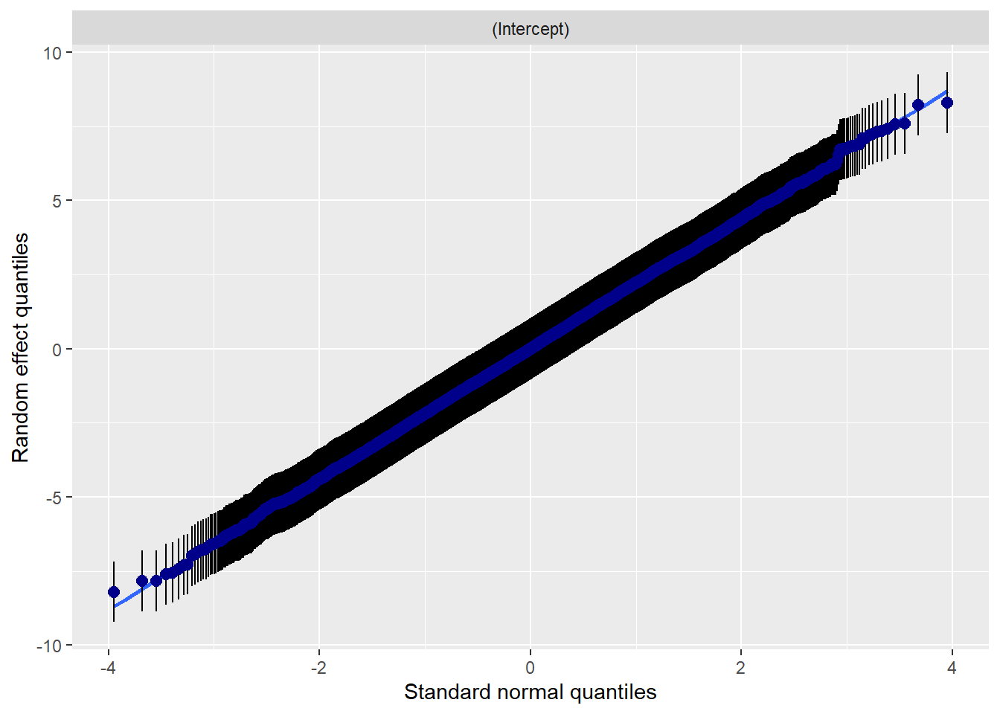
##
##
## [[3]]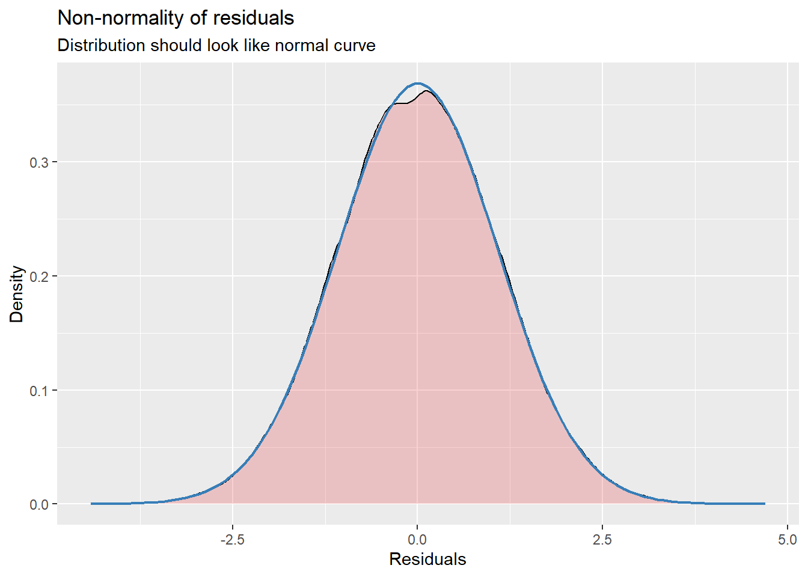
##
## [[4]]## `geom_smooth()` using formula = 'y ~ x'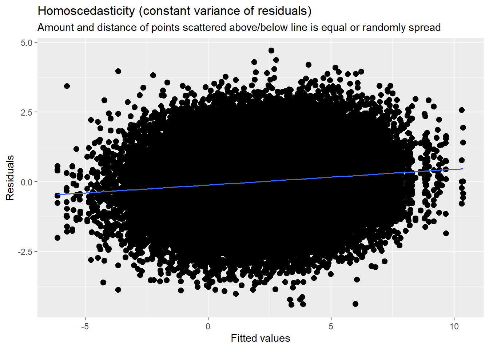
Some interpretation
\(\gamma_{00}\), the intercept, estimates the grand mean across all occasions and individuals. The value, 2.08 (p < 0.001) confirms that the average anxiety of the average client between 0 and 19 sessions is non-zero.
- \(\sigma^{2}\), within-person variance, is 1.44.
- \(\tau_{00}\), between-person variance, is 5.12.
The intraclass correlation coeffient (ICC), $$, describes the proportion of variance that lies between people. It is the essential piece of data we need from this model. Because the total variation in Y is just the sum of the within and between-person variance components, the population intraclass correlation is:
\[\rho =\frac{\tau_{00}}{\sigma^{2}+\tau_{00}}\]
## [1] 0.7804878In our case this translates:
\[\rho =\frac{5.12}{1.44 + 5.12} = 0.78\]
This means that 78% of the total variation in anxiety use is attributable to differences among clients. Within the context of the unconditional means model, the ICC also summarizes the size of the residual (or error) autocorrelation. Practically speaking, this means that we estimate that for each person, the average correlation between any pair of composite residuals (e.g., between occasions 1 and 2, 2 and 3, or 1 and 3) is 0.78. This is considered to be large and far away from the zero residual autocorrelation that an OLS analysis would assume (require).
In addition to hand-calculating the ICC we spot it in the tab_model/Viewer pane when we ask for a table from the lme4 model.
14.6.3 Model 2: The unconditional growth model
The second model is introduces time into the L1 submodel. Because a linear model made sense in our exploratory analyses, we specify a trajectory of linear change. We do not include any other substantive predictors. Because there are no other predictors, it is an unconditional growth model.
\[Y_{ij}=\beta _{0i}+\beta _{1i}SesNum_{ij}+\varepsilon _{ij}\] \[\beta _{0i}=\gamma _{00} + \zeta _{0i}\] \[\beta _{1i}=\gamma _{10} + \zeta _{1j}\]
14.6.4 Another moment on lmer() syntax
To model a random intercept, we use this basic formula: DV ~ IV + (1 | rand.int), where
- DV is the dependent variable
- IV represents independent variables
- 1 represents the coefficients (or slope) of the independent variables
- rand.int is the variable acting as a random intercept (usually this is the column of participant IDs)
To model a random slope we use: DV ~ IV + (rand.slope | rand.int).
For comparison, this was our prior model; we can see how the model building occurs. Mod1a <- lmer(Anxiety ~1 +(1 | ClientID), LfvrLong, REML = FALSE)
# with lme4 package
Mod2a <- lme4::lmer(Anxiety ~ SesNum + (SesNum | ClientID), LfvrLong, REML = FALSE)## boundary (singular) fit: see help('isSingular')## Linear mixed model fit by maximum likelihood ['lmerMod']
## Formula: Anxiety ~ SesNum + (SesNum | ClientID)
## Data: LfvrLong
##
## AIC BIC logLik deviance df.resid
## 236029.0 236083.4 -118008.5 236017.0 64119
##
## Scaled residuals:
## Min 1Q Median 3Q Max
## -3.8724 -0.6074 -0.0034 0.6132 3.5660
##
## Random effects:
## Groups Name Variance Std.Dev. Corr
## ClientID (Intercept) 5.181154023 2.27621
## SesNum 0.000001932 0.00139 -1.00
## Residual 1.259247013 1.12216
## Number of obs: 64125, groups: ClientID, 12825
##
## Fixed effects:
## Estimate Std. Error t value
## (Intercept) 2.7787360 0.0221083 125.69
## SesNum -0.0782356 0.0008979 -87.13
##
## Correlation of Fixed Effects:
## (Intr)
## SesNum -0.377
## optimizer (nloptwrap) convergence code: 0 (OK)
## boundary (singular) fit: see help('isSingular')sjPlot::tab_model(Mod1a, Mod2a, p.style = "numeric", show.ci = FALSE, show.se = TRUE,
show.df = FALSE, show.re.var = TRUE, show.aic = TRUE, show.dev = TRUE,
use.viewer = TRUE, dv.labels = c("Mod1", "Mod2"))## Model was not fitted with REML, however, `estimator = "REML"`. Set
## `estimator = "ML"` to obtain identical results as from `AIC()`.## Model was not fitted with REML, however, `estimator = "REML"`. Set
## `estimator = "ML"` to obtain identical results as from `AIC()`.| Mod1 | Mod2 | |||||
|---|---|---|---|---|---|---|
| Predictors | Estimates | std. Error | p | Estimates | std. Error | p |
| (Intercept) | 2.08 | 0.02 | <0.001 | 2.78 | 0.02 | <0.001 |
| SesNum | -0.08 | 0.00 | <0.001 | |||
| Random Effects | ||||||
| σ2 | 1.44 | 1.26 | ||||
| τ00 | 5.12 ClientID | 5.18 ClientID | ||||
| τ11 | 0.00 ClientID.SesNum | |||||
| ρ01 | -1.00 ClientID | |||||
| ICC | 0.78 | |||||
| N | 12825 ClientID | 12825 ClientID | ||||
| Observations | 64125 | 64125 | ||||
| Marginal R2 / Conditional R2 | 0.000 / 0.780 | 0.127 / NA | ||||
| Deviance | 243107.470 | 236017.007 | ||||
| AIC | 243119.404 | 236047.140 | ||||
# can swap this statement with the 'file = 'TabMod_Table'' to get
# Viewer output or the outfile that you can open in Word file =
# 'TabMod_Table.doc'A plot of predicted values illustrates the decrease in anxiety as sessions continue.

Diagnostic plots continue to check for outliers, non-normality, and heteroscedasticity. In my mind they continue to look reasonable.
## [[1]]## `geom_smooth()` using formula = 'y ~ x'
##
## [[2]]
## [[2]]$ClientID## `geom_smooth()` using formula = 'y ~ x'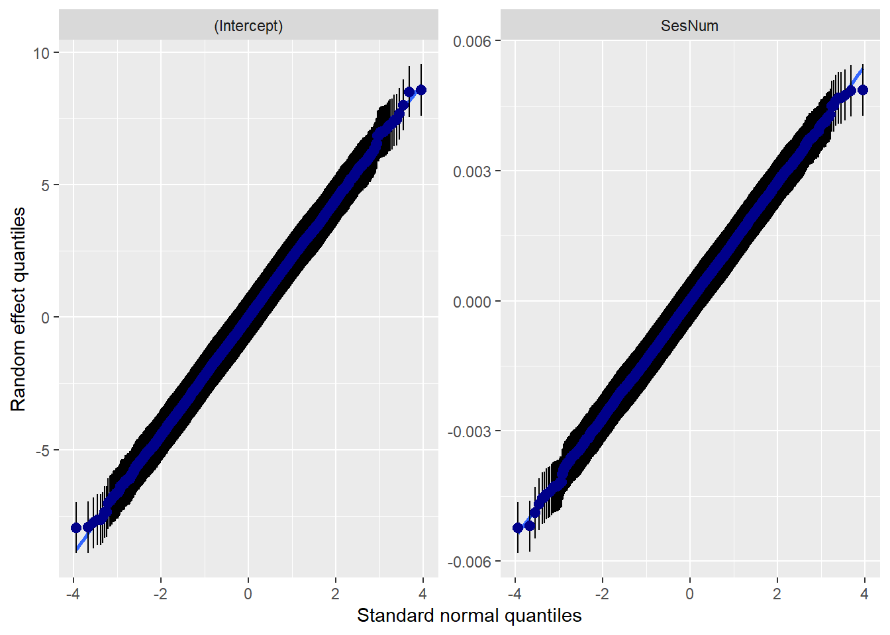
##
##
## [[3]]
##
## [[4]]## `geom_smooth()` using formula = 'y ~ x'
Interpreting Fixed Effects Looking at the tab_model() in the viewer, we can see that
At Session #1 (which was rescaled so that the value of 0 is the first session), the average client has a non-zero anxiety level of 2.78 (p < 0.001; \(\gamma _{00}\)). On average, anxiety decreases by 0.08 units per session. Using these values together, at Session #3, the average client could be expected to have an anxiety level of 1.92 (2.08 + (-.08) + (-.08)).
Interpreting Variance Components
Focusing on what this change means to the L1 residuals:
In Mod1 we postulated that individual \(i\)’s observed score on occasion \(j\) (i.e,. \(Y_{ij}\)) deviates by \(\varepsilon _{ij}\) from his or her person-specific mean
In Mod2, we postulate that \(Y_{ij}\) deviates by \(\varepsilon _{ij}\) from his or her true change trajectory.
Comparing the Mod1 to Mod2 means that we also have a second part to the L2 submodel that depicts interindividual variation in the rates of change (\(\beta _{1i}\)).
The L1 residual variance, \(\sigma^{2}\) now summarizes the scatter of each person’s data around their own linear change trajectory (not around their own specific mean). Our value of 1.26 is a decrease of 0.18 from Mod1. While we don’t get p values to let us know whether/not within-person variation remains, the value is non-zero. Explaining more within-person variance would require another, substantive time-covarying (L1) predictor. This example only has time-invariant predictors.
The L2 residual variances (\(\sigma_{0 }^{2}\), \(\sigma_{1 }^{2}\)) now summarize between-person variability in initial status and rates of change.
The value of \(\tau _{00}\) is 5.12; this is variance remaining around the intercept (anxiety at Session #1). Stated another way, it is the scatter of \(\beta _{_{0i}}\) around \(\hat{\gamma }_{00}\). While we would not expect that our L1 addition (SesNum) to have decreased between-person variance, it is a little surprising (but not uncommon) that it increased.
The value of \(\tau _{11}\) is 0.00; this is variance remaining around the slope (rate of growth). Stated another way, it is the scatter of \(\beta _{_{1i}}\) around \(\hat{\gamma }_{10}\). This value of 0.00 suggests that there is no remaining variance to explain in the slope.
Because the introduction of the time variable, SesNum, changes the meaning of the L2 variance components, we do not compare the \(\tau _{00}\)) values between Models 1 and 2. As we move forward (keeping SesNum in the model) we will use the Model 2 estimates as benchmarks for comparison.
Together, these 3 variance components allow us to distinguish L1 variation from two different kinds of L2 variation and determine whether interindividual differences in change are due to interindividual differences in true initial status or true rate of change.
\(\rho_{01}\) is the population correlation of the L2 residuals that quantifies the relationship between true initial status and true change. The value of -1.00 is negative and strong meaning that the less anxious the individual was at Session #1, the slower that anxiety subsided.
Proportion of Variance Explained
In OLS regression, a simple way of computing a summary \(R^2\) statistic is to square the sample correlation between observed and predicted values of the outcome.
A similar approach can be used in the multilevel model for change. We need to
- Compute a predicted outcome value for each person on each occasion of measurement; and
- Square the sample correlation between observed and predicted values.
The result is the \(pseudo-R^2\) statistic – an assessment of the proportion of total outcome variation explained by the multilevel model’s specific combination of predictors.
In lme4 output, \(pseudo-R^2\) is labeled as “Marginal\(R^2\)” and is shown to be 0.127. That is, 13% of the total variability in anxiety is associated with linear time. As we add substantive predictors to this model, we examine whether, and by how much, this \(pseudo-R^2\) statistic increases.
We can also compute \(pseudo-R^2\) statistics for the variance components.
Residual variation is the portion of the outcome variation unexplained by the model’s predictors. We can use these to further explain the model. When we evaluate a series of models we hope that adding predictors further explains unexplained outcome variation. Thus, residual variation should decline. The magnitude of the decline quantifies improvement in fit. If the decline is relatively large – we’ve made a large difference. To assess these declines on a common scale we compute the proportional reduction in residual variance as we add the predictors.
Unconditional models provide a baseline for comparison: the unconditional means model provides a baseline estimate of \(\sigma ^{2}\) (within-person variance); the unconditional growth model provides baseline estimates of both \(\tau _{00}\) and \(\tau _{11}\) (between person variance around the intercept and slope .
We’ll start by examining the decrease in within-person residual variance between the unconditional means model and unconditional growth model. We are comparing \(\sigma ^{2}\). We have to do this by hand, here’s the formula:
\[Pseudo R_{\varepsilon }^{2} = \frac{\sigma^{2}(unconditional. means. model) - \sigma^{2}(unconditional. growth. model)}{\sigma ^{2}(unconditional. means. model)}\]
We calculate it manually:
## [1] 0.125We conclude that 13% of the within-person variation in anxiety is explained by number of sessions. The only way to further reduce this variance component is to add time-covarying predictors to the L1 submodel.
Singer and Willett (2003) warn us about the flaws of \(pseudo-R^2\). Specifically, these stats can go wonky! In the multilevel model for change, additional predictors generally reduce variance components and increase \(pseudo-R^2\) statistics.
However, because of explicit links among the model’s several parts, there are times when the addition of predictors increases the variance components’ magnitude. This is most likely to happen when all, or most, of the outcome variation is exclusively within- or between-. Then, a predictor added at one level reduces the residual variance at that level, but potentially increases the residual at the other level. This results in a negative \(pseudo-R^2\). In summary: be cautious in interpreting these.
14.6.5 A Taxonomy of Statistical Models
The Singer and Willett (2003) version of Jorsekog’s (1993) “model generating” and Hayes’ (2018) “piecewise” approach might be their taxonomical approach to model building. Specifically:
- “Each model in the taxonomy extends a prior model in some sensible way; inspection and comparison of its elements tell the story of predictors’ individual and joint effects. Most data analysis iterate toward a meaningful path; good analysis does not proceed in a rigidly predetermined order” (Singer & Willett, 2003, p. 105).
How do you approach model specification: logic, theory, prior research…supplemented by hypothesis testing and comparison of model fit.
A possible order:
- Examine the effect of each predictor, individually.
- Focus on predictors of primary interest (while including others whose effects you want to control).
- You can add predictors individually, or in groups
- You can address issues of functional form with interactions and transformations
- Progression toward a “final model” whose interpretation will address your research questions *the quotations mean that no statistical model is ever final; it’s merely a placeholder until a better model is found
- Longitudinal modeling brings complexities
- Multiple L2 outcomes can each be related to predictors
- Multiple kinds of effects (fixed effects and variance components)
- The simplest strategy is to initially include each L2 predictor (simultaneously) in all L2 submodels, but as demonstrated in later examples, they may be trimmed.
- Each individual growth parameter can have its own predictors and one goal of model building is to identify which predictors are important for which L1 parameters.
- Although each L2 submodel can contain fixed and random effects, both are not necessarily required; sometimes a model with fewer random effects will provide a more parsimonious representation and clearer substantive insights
Singer and Willett (2003) distinguish between two types of predictors:
- Question predictors are those whose effects are of primary, substantive, interest.
- Control predictors are those whose effects you would like to remove.
Not surprisingly, different approaches may lead to the same “final model.” The process Lefevor and colleagues (2017) follow echoes the Singer and Willett (2003) approach, so that is what we will do.
As we procede:
- Model 3 includes sexual identity (and its cross-level interaction with session number) as predictor of both initial status and change.
- Model 4 adds religious affiliation to both L2 models. Its addition also includes interaction terms with session number and sexual identity.
- Model 5 trims non-significant effects.
How much of this goes in the ms?
Singer and Willett(2003) indicate that we “identify a manageable subset of models that, taken together, tells a persuasive story parsimoniously” (p. 106). Minimally, include the (a) unconditional means model, (b) unconditional growth model, (c) “final model.” Intermediary models may be included if they provide important steps and/or tell interesting stories in their own right. Tables (easily produced with the tab_model() function) should always be included (again, not all models tested are required) because they allow comparison of fitted models in a systematic way.
14.6.6 Model 3: The uncontrolled effects of sexual identity
For comparison: Mod1a <- lmer(Anxiety ~1 +(1 | ClientID), LfvrLong, REML = FALSE) Mod2a <- lmer(Anxiety ~ SesNum +(SesNum | ClientID), LfvrLong, REML = FALSE)
## Warning in checkConv(attr(opt, "derivs"), opt$par, ctrl = control$checkConv, :
## Model failed to converge with max|grad| = 0.0355667 (tol = 0.002, component 1)## Warning in checkConv(attr(opt, "derivs"), opt$par, ctrl = control$checkConv, : Model is nearly unidentifiable: very large eigenvalue
## - Rescale variables?## Linear mixed model fit by maximum likelihood ['lmerMod']
## Formula: Anxiety ~ SesNum * Het0 + (SesNum | ClientID)
## Data: LfvrLong
##
## AIC BIC logLik deviance df.resid
## 235991.7 236064.3 -117987.9 235975.7 64117
##
## Scaled residuals:
## Min 1Q Median 3Q Max
## -3.8707 -0.6073 -0.0033 0.6135 3.5664
##
## Random effects:
## Groups Name Variance Std.Dev. Corr
## ClientID (Intercept) 5.165055539 2.272676
## SesNum 0.000002437 0.001561 -0.91
## Residual 1.259220839 1.122150
## Number of obs: 64125, groups: ClientID, 12825
##
## Fixed effects:
## Estimate Std. Error t value
## (Intercept) 2.700371 0.025993 103.888
## SesNum -0.078559 0.001058 -74.284
## Het0 0.281412 0.049260 5.713
## SesNum:Het0 0.001143 0.002002 0.571
##
## Correlation of Fixed Effects:
## (Intr) SesNum Het0
## SesNum -0.378
## Het0 -0.528 0.199
## SesNum:Het0 0.200 -0.528 -0.379
## optimizer (nloptwrap) convergence code: 0 (OK)
## Model failed to converge with max|grad| = 0.0355667 (tol = 0.002, component 1)
## Model is nearly unidentifiable: very large eigenvalue
## - Rescale variables?sjPlot::tab_model(Mod1a, Mod2a, Mod3a, p.style = "numeric", show.ci = FALSE,
show.se = TRUE, show.df = FALSE, show.re.var = TRUE, show.aic = TRUE,
show.dev = TRUE, use.viewer = TRUE, dv.labels = c("Mod1", "Mod2", "Mod3"))## Model was not fitted with REML, however, `estimator = "REML"`. Set
## `estimator = "ML"` to obtain identical results as from `AIC()`.
## Model was not fitted with REML, however, `estimator = "REML"`. Set
## `estimator = "ML"` to obtain identical results as from `AIC()`.
## Model was not fitted with REML, however, `estimator = "REML"`. Set
## `estimator = "ML"` to obtain identical results as from `AIC()`.| Mod1 | Mod2 | Mod3 | |||||||
|---|---|---|---|---|---|---|---|---|---|
| Predictors | Estimates | std. Error | p | Estimates | std. Error | p | Estimates | std. Error | p |
| (Intercept) | 2.08 | 0.02 | <0.001 | 2.78 | 0.02 | <0.001 | 2.70 | 0.03 | <0.001 |
| SesNum | -0.08 | 0.00 | <0.001 | -0.08 | 0.00 | <0.001 | |||
| Het0 | 0.28 | 0.05 | <0.001 | ||||||
| SesNum × Het0 | 0.00 | 0.00 | 0.568 | ||||||
| Random Effects | |||||||||
| σ2 | 1.44 | 1.26 | 1.26 | ||||||
| τ00 | 5.12 ClientID | 5.18 ClientID | 5.17 ClientID | ||||||
| τ11 | 0.00 ClientID.SesNum | 0.00 ClientID.SesNum | |||||||
| ρ01 | -1.00 ClientID | -0.91 ClientID | |||||||
| ICC | 0.78 | 0.80 | |||||||
| N | 12825 ClientID | 12825 ClientID | 12825 ClientID | ||||||
| Observations | 64125 | 64125 | 64125 | ||||||
| Marginal R2 / Conditional R2 | 0.000 / 0.780 | 0.127 / NA | 0.030 / 0.808 | ||||||
| Deviance | 243107.470 | 236017.007 | 235975.714 | ||||||
| AIC | 243119.404 | 236047.140 | 236024.777 | ||||||
# can swap this statement with the 'file = 'TabMod_Table'' to get
# Viewer output or the outfile that you can open in Word file =
# 'TabMod_Table.doc'Diagnostic plots continue to check for outliers, non-normality, and heteroscedasticity. In my mind they continue to look reasonable.
## [[1]]## `geom_smooth()` using formula = 'y ~ x'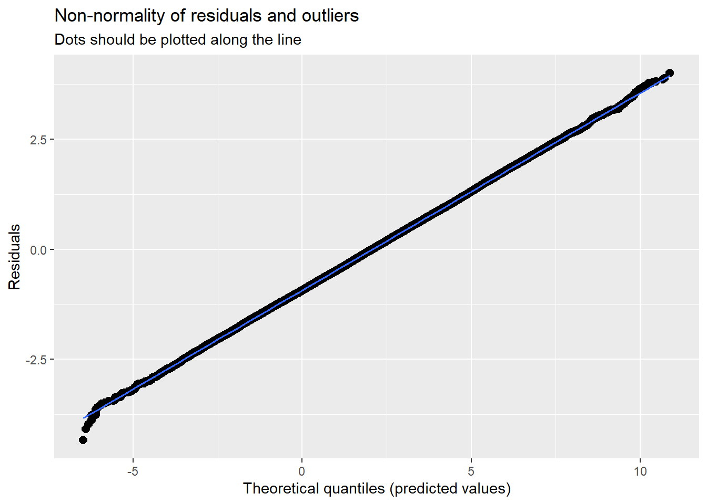
##
## [[2]]
## [[2]]$ClientID## `geom_smooth()` using formula = 'y ~ x'
##
##
## [[3]]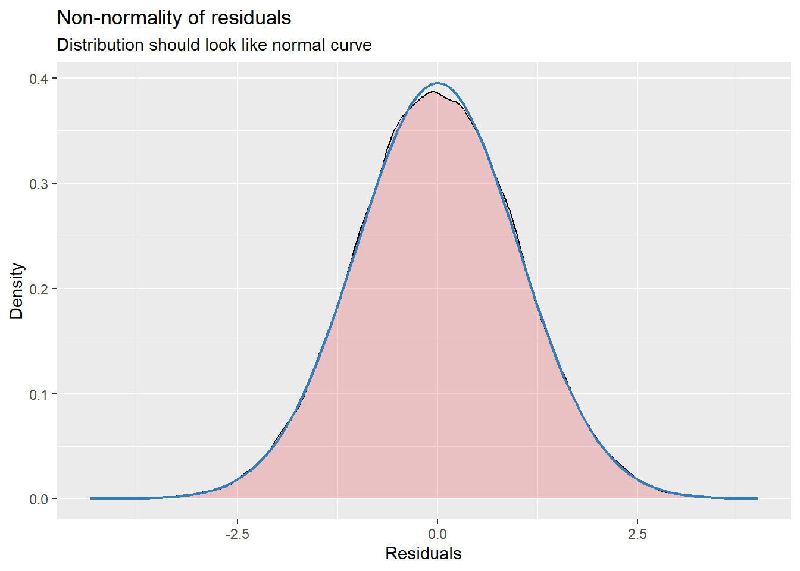
##
## [[4]]## `geom_smooth()` using formula = 'y ~ x'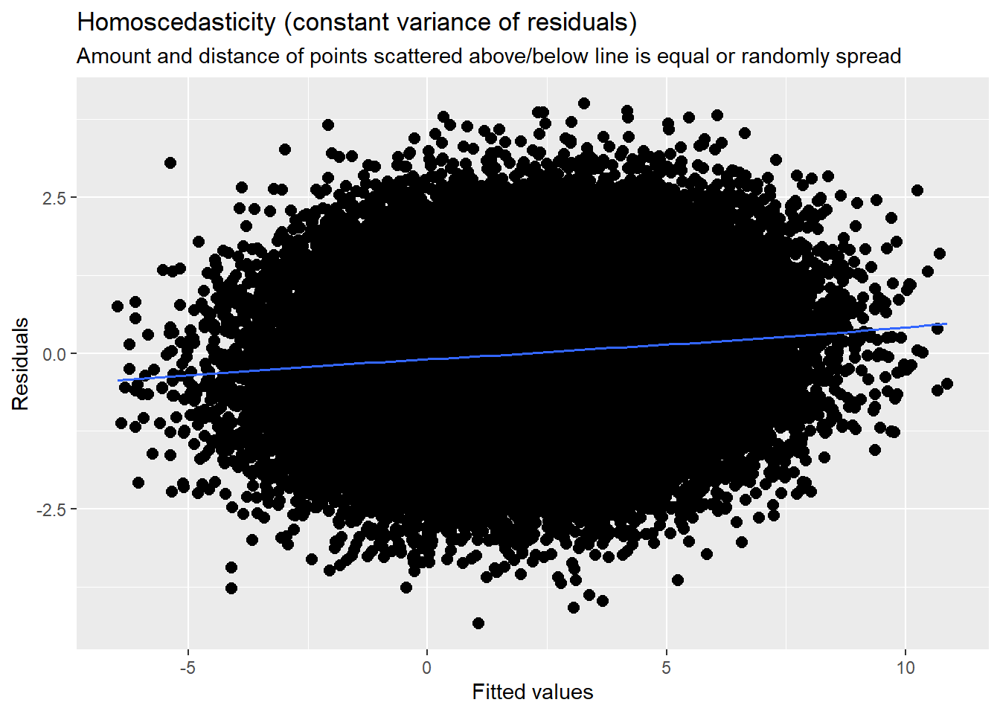
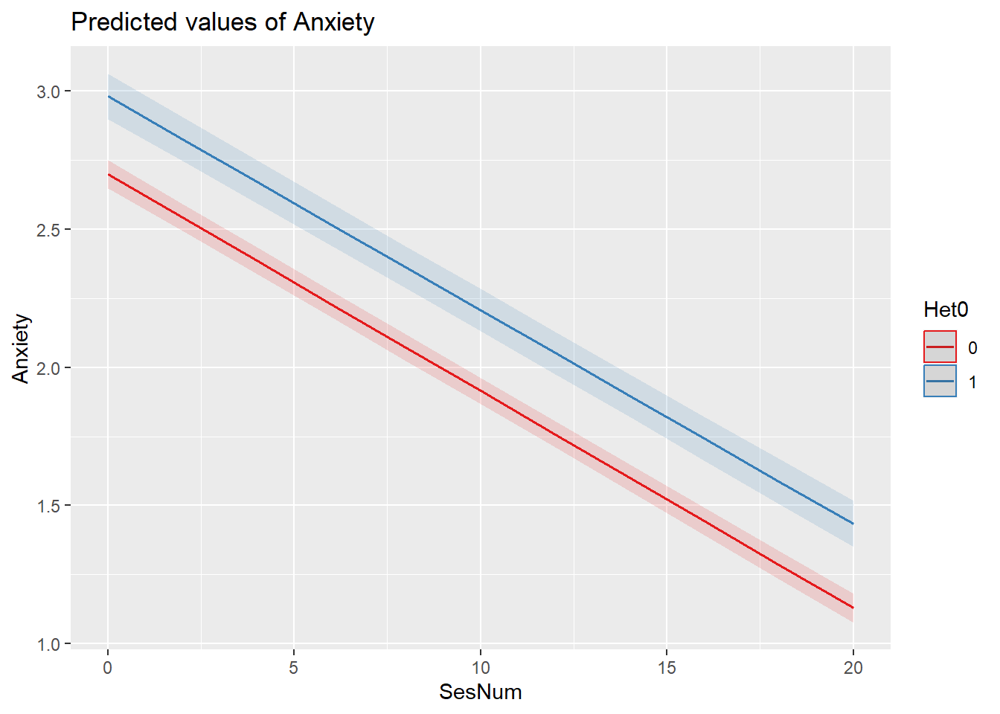
Interpreting Fixed Effects The estimated anxiety at Session #1 for heterosexual individuals is 2.70 (p < .001). If the client is LGBQQ, the average Session #1 anxiety level is higher: 2.98 (p < .001; 2.70 + .28).
The estimated rate of change in anxiety for the average client who is heterosexual is -.08 (p < .001) units per session. The estimated differential in the rate of change in anxiety between clients who are heterosexual and LGBQQ is nondistinguishable (\(\beta\) = 0.00, p = .568). This is evident in the interaction plot produced by the plot_model() function.
Interpreting Variance Components
Not surprisingly, the \(\sigma ^{2}\) value (1.26) stayed the same from Mod2a to Mod3a. This is because we did not add a within-subjects (time covarying) predictor. If it had changed, we would have conducted the proportionate reduction in variance evaluation.
\(\tau _{00}\) decreased from 5.18 (Mod2a) to 5.17 (Mod3a). We can apply the proportionate reduction in variance formula to determine the proportion of L2 intercept variance accounted for by the Het0 addition.
\[Pseudo R_{\zeta }^{2} = \frac{\tau _{00} (unconditional. growth. model) - \tau _{00}(subsequent. model)}{\tau _{00}(unconditional. growth. model)}\]
## [1] 0.001930502The \(\tau _{00}\) variance component decreases by less than 1% from the unconditional growth model (Mod2a)
\(\tau _{11}\) is unchanged. Both Mod2a and Mod3a are 0.00; adding sexual identity did not change between-subjects’ slopes. Similarly, if it had changed, we would have conducted the proportionate reduction in variance evaluation.
These variance components are now considered partial or conditional variances because they quantify the interindividual differences in change that remain unexplained by the model’s predictors.
Here’s what we might observe
- It appears there is residual around the intercept (\(\tau _{00}\)) remaining, so exploring the contribution of religious affiliation seems justifiable.
- While Lefevor and colleagues (2017) immediately trim the interaction term (leaving only the main effect of sexual identity), Singer and Willett (2003) caution against immediately trimming effects because they fail to predict rate-of-change variance. Because it is a focal predictor, it is worth retaining it until we have investigated the full spectrum of its effects. We will try this approach.
14.6.7 Model 4: The effects of religious affiliation
Model 4 evaluates the effects of religious affiliation on initial status and rates of change in anxiety, controlling for the effects of sexual identity on initial status and rate of change.
For comparison: Mod1a <- lmer(Anxiety ~1 +(1 | ClientID), LfvrLong, REML = FALSE) Mod2a <- lmer(Anxiety ~ SesNum +(SesNum | ClientID), LfvrLong, REML = FALSE) Mod3a <- lmer(Anxiety ~ SesNum*Het0 +(SesNum | ClientID), LfvrLong, REML = FALSE)
Note that in this lmer() specification, I have added a control statement: control = lmerControl(optimizer = “bobyq”). This is because I was getting a “failure to converge” warning. Although it is more complicated than I will present, trying different engines can sometimes force a convergence. There are a variety of different optimizers (e.g., bobyqa, Nelder-Mead, optimx, nlminb). There is much to learn about optimizers and so internet searching and evaluating will probably be required if/when you encounter convergence issues.
Another troubleshooting solution would be to trim the model of the non-significant effects. At this point, I will try to get the full model to run and then trim at the end.
# with lme4 package
Mod4a <- lme4::lmer(Anxiety ~ SesNum * Het0 + SesNum * DRel0 + Het0 * DRel0 +
(SesNum | ClientID), LfvrLong, REML = FALSE, control = lme4::lmerControl(optimizer = "bobyqa"))## boundary (singular) fit: see help('isSingular')## Linear mixed model fit by maximum likelihood ['lmerMod']
## Formula: Anxiety ~ SesNum * Het0 + SesNum * DRel0 + Het0 * DRel0 + (SesNum |
## ClientID)
## Data: LfvrLong
## Control: lme4::lmerControl(optimizer = "bobyqa")
##
## AIC BIC logLik deviance df.resid
## 235995.6 236095.3 -117986.8 235973.6 64114
##
## Scaled residuals:
## Min 1Q Median 3Q Max
## -3.8761 -0.6073 -0.0032 0.6131 3.5787
##
## Random effects:
## Groups Name Variance Std.Dev. Corr
## ClientID (Intercept) 5.16506288 2.272677
## SesNum 0.00000201 0.001418 -1.00
## Residual 1.25918683 1.122135
## Number of obs: 64125, groups: ClientID, 12825
##
## Fixed effects:
## Estimate Std. Error t value
## (Intercept) 2.676170 0.040708 65.741
## SesNum -0.077048 0.001528 -50.438
## Het0 0.309204 0.074189 4.168
## DRel0 0.040209 0.052031 0.773
## SesNum:Het0 0.001122 0.002002 0.561
## SesNum:DRel0 -0.002512 0.001832 -1.371
## Het0:DRel0 -0.046310 0.092939 -0.498
##
## Correlation of Fixed Effects:
## (Intr) SesNum Het0 DRel0 SsN:H0 SN:DR0
## SesNum -0.349
## Het0 -0.514 0.092
## DRel0 -0.770 0.236 0.377
## SesNum:Het0 0.129 -0.371 -0.252 -0.002
## SesNum:DRl0 0.252 -0.722 0.000 -0.327 0.007
## Het0:DRel0 0.384 0.001 -0.748 -0.500 0.001 -0.001
## optimizer (bobyqa) convergence code: 0 (OK)
## boundary (singular) fit: see help('isSingular')sjPlot::tab_model(Mod1a, Mod2a, Mod3a, Mod4a, p.style = "numeric", show.ci = FALSE,
show.se = TRUE, show.df = FALSE, show.re.var = TRUE, show.aic = TRUE,
show.dev = TRUE, use.viewer = TRUE, dv.labels = c("Mod1", "Mod2", "Mod3",
"Mod4"))## Model was not fitted with REML, however, `estimator = "REML"`. Set
## `estimator = "ML"` to obtain identical results as from `AIC()`.## Model was not fitted with REML, however, `estimator = "REML"`. Set
## `estimator = "ML"` to obtain identical results as from `AIC()`.
## Model was not fitted with REML, however, `estimator = "REML"`. Set
## `estimator = "ML"` to obtain identical results as from `AIC()`.
## Model was not fitted with REML, however, `estimator = "REML"`. Set
## `estimator = "ML"` to obtain identical results as from `AIC()`.| Mod1 | Mod2 | Mod3 | Mod4 | |||||||||
|---|---|---|---|---|---|---|---|---|---|---|---|---|
| Predictors | Estimates | std. Error | p | Estimates | std. Error | p | Estimates | std. Error | p | Estimates | std. Error | p |
| (Intercept) | 2.08 | 0.02 | <0.001 | 2.78 | 0.02 | <0.001 | 2.70 | 0.03 | <0.001 | 2.68 | 0.04 | <0.001 |
| SesNum | -0.08 | 0.00 | <0.001 | -0.08 | 0.00 | <0.001 | -0.08 | 0.00 | <0.001 | |||
| Het0 | 0.28 | 0.05 | <0.001 | 0.31 | 0.07 | <0.001 | ||||||
| SesNum × Het0 | 0.00 | 0.00 | 0.568 | 0.00 | 0.00 | 0.575 | ||||||
| DRel0 | 0.04 | 0.05 | 0.440 | |||||||||
| SesNum × DRel0 | -0.00 | 0.00 | 0.171 | |||||||||
| Het0 × DRel0 | -0.05 | 0.09 | 0.618 | |||||||||
| Random Effects | ||||||||||||
| σ2 | 1.44 | 1.26 | 1.26 | 1.26 | ||||||||
| τ00 | 5.12 ClientID | 5.18 ClientID | 5.17 ClientID | 5.17 ClientID | ||||||||
| τ11 | 0.00 ClientID.SesNum | 0.00 ClientID.SesNum | 0.00 ClientID.SesNum | |||||||||
| ρ01 | -1.00 ClientID | -0.91 ClientID | -1.00 ClientID | |||||||||
| ICC | 0.78 | 0.80 | ||||||||||
| N | 12825 ClientID | 12825 ClientID | 12825 ClientID | 12825 ClientID | ||||||||
| Observations | 64125 | 64125 | 64125 | 64125 | ||||||||
| Marginal R2 / Conditional R2 | 0.000 / 0.780 | 0.127 / NA | 0.030 / 0.808 | 0.137 / NA | ||||||||
| Deviance | 243107.470 | 236017.007 | 235975.714 | 235973.577 | ||||||||
| AIC | 243119.404 | 236047.140 | 236024.777 | 236046.835 | ||||||||
# can swap this statement with the 'file = 'TabMod_Table'' to get
# Viewer output or the outfile that you can open in Word file =
# 'TabMod_Table.doc'Diagnostic plots continue to check for outliers, non-normality, and heteroscedasticity. In my mind they continue to look reasonable.
## [[1]]## `geom_smooth()` using formula = 'y ~ x'
##
## [[2]]
## [[2]]$ClientID## `geom_smooth()` using formula = 'y ~ x'
##
##
## [[3]]
##
## [[4]]## `geom_smooth()` using formula = 'y ~ x'
A plot of predicted values illustrates that anxiety continues decrease as sessions increase, even though we have added additional predictors. So far, this suggests stability in that result.
## [[1]]
##
## [[2]]
##
## [[3]]
# plot_model (Mod3a, type='int', terms = c('SesNum', 'Het0 [0,1]'))
# #this produces the same result, I included it as an example of how
# to add further specifications sjPlot::plot_model (Mod4a,
# type='pred',terms=c('SesNum', 'Het0', 'DRel0'))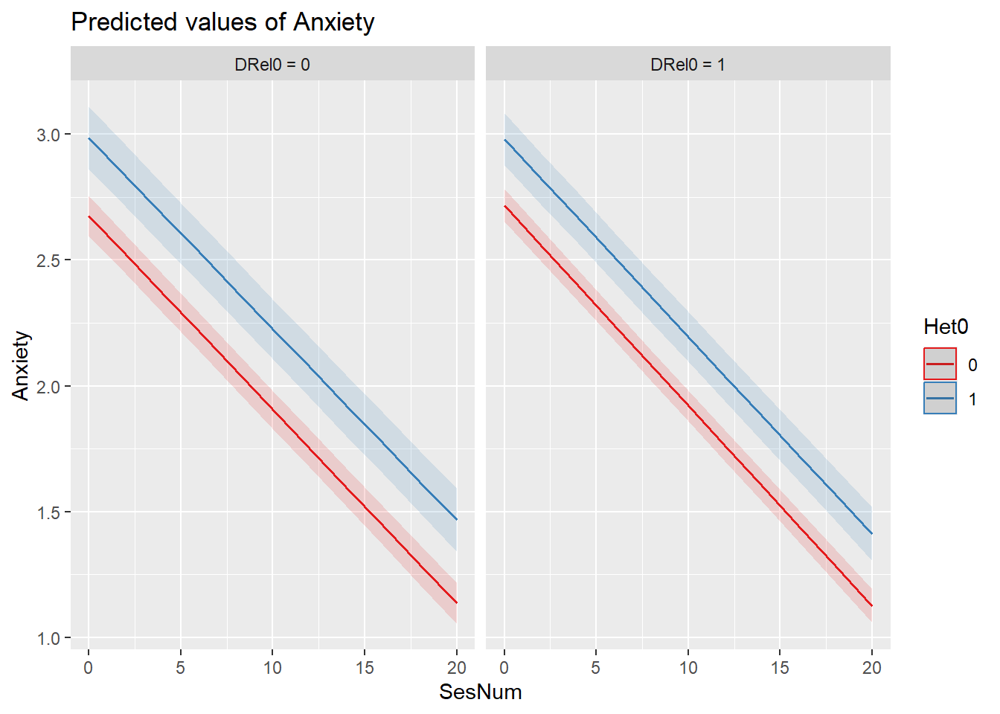
Interpreting Fixed Effects
The additions are all nonsignificant. That is:
- The prior predictors of SesNum and Het0 continue to have significant (and stable) effects.
- We previously considered trimming the SesNum*Het0 interaction effect (but left it in).
- DRel0 as an individual predictor, and also in moderating relations with SesNum and Het0 were all non-significant.
Interpreting Variance Components Similarly, we see little change in the variance components. In fact, because the \(\sigma ^{2}\), \(\tau _{00}\) (intercept), and \(\tau _{11}\) (slope) remained constant, there is no point in conducting the proportionate reduction in variance tests.
14.6.8 Model 5: Model trimming
In this model, we trim the non-significant effects. Researchers will sometimes retain focal predictors, even if they are non-significant. Lefevor and colleagues (Lefevor et al., 2017) appear to do this when by retaining the non-significant sexual identity/religious affiliation interaction.
Reviewing my code will show that in trimming, I tried different combinations of trimming, “just to make sure” nothing became significant when something else was trimmed. Alas, nothing became significant. None-the-less, hashtagging it out allows me to retain a record of what I tried, while not walking through the entire process of taking notes about what I found.
For comparison Mod1a <- lmer(Anxiety ~1 +(1 | ClientID), LfvrLong, REML = FALSE) Mod2a <- lmer(Anxiety ~ SesNum +(SesNum | ClientID), LfvrLong, REML = FALSE) Mod3a <- lmer(Anxiety ~ SesNumHet0 +(SesNum | ClientID), LfvrLong, REML = FALSE) Mod4a <- lmer(Anxiety ~ SesNumHet0 + SesNumDRel0 + Het0DRel0 + (SesNum | ClientID), LfvrLong, REML = FALSE, control = lmerControl(optimizer= “bobyqa”))
# Mod5a<- lmer(Anxiety ~ SesNum*DRel0 + Het0*DRel0 + (SesNum |
# ClientID), LfvrLong, REML = FALSE, control = lmerControl(optimizer=
# 'bobyqa')) Mod5a<- lmer(Anxiety ~ SesNum*Het0 + Het0*DRel0 +
# (SesNum | ClientID), LfvrLong, REML = FALSE, control =
# lmerControl(optimizer= 'bobyqa'))#Mod5a<- lmer(Anxiety ~
# SesNum*Het0 + SesNum*DRel0 + (SesNum | ClientID), LfvrLong, REML =
# FALSE, control = lmerControl(optimizer= 'bobyqa')) Mod5a<-
# lmer(Anxiety ~ SesNum + Het0*DRel0 + (SesNum | ClientID), LfvrLong,
# REML = FALSE, control = lmerControl(optimizer= 'bobyqa')) Mod5a <-
# lmer(Anxiety ~ Het0 + SesNum + DRel0 + (SesNum | ClientID),
# LfvrLong, REML = FALSE, control = lmerControl(optimizer= 'bobyqa'))
Mod5a <- lme4::lmer(Anxiety ~ SesNum + Het0 + (SesNum | ClientID), LfvrLong,
REML = FALSE, control = lme4::lmerControl(optimizer = "bobyqa"))## boundary (singular) fit: see help('isSingular')## Linear mixed model fit by maximum likelihood ['lmerMod']
## Formula: Anxiety ~ SesNum + Het0 + (SesNum | ClientID)
## Data: LfvrLong
## Control: lme4::lmerControl(optimizer = "bobyqa")
##
## AIC BIC logLik deviance df.resid
## 235990.0 236053.5 -117988.0 235976.0 64118
##
## Scaled residuals:
## Min 1Q Median 3Q Max
## -3.8692 -0.6073 -0.0039 0.6137 3.5690
##
## Random effects:
## Groups Name Variance Std.Dev. Corr
## ClientID (Intercept) 5.16509523 2.272685
## SesNum 0.00000201 0.001418 -1.00
## Residual 1.25924462 1.122161
## Number of obs: 64125, groups: ClientID, 12825
##
## Fixed effects:
## Estimate Std. Error t value
## (Intercept) 2.6974082 0.0254699 105.906
## SesNum -0.0782400 0.0008979 -87.136
## Het0 0.2920587 0.0455930 6.406
##
## Correlation of Fixed Effects:
## (Intr) SesNum
## SesNum -0.327
## Het0 -0.498 -0.001
## optimizer (bobyqa) convergence code: 0 (OK)
## boundary (singular) fit: see help('isSingular')sjPlot::tab_model(Mod1a, Mod2a, Mod3a, Mod4a, Mod5a, p.style = "numeric",
show.ci = FALSE, show.se = TRUE, show.df = FALSE, show.re.var = TRUE,
show.aic = TRUE, show.dev = TRUE, use.viewer = TRUE, dv.labels = c("Mod1",
"Mod2", "Mod3", "Mod4", "Mod5"))## Model was not fitted with REML, however, `estimator = "REML"`. Set
## `estimator = "ML"` to obtain identical results as from `AIC()`.## Model was not fitted with REML, however, `estimator = "REML"`. Set
## `estimator = "ML"` to obtain identical results as from `AIC()`.
## Model was not fitted with REML, however, `estimator = "REML"`. Set
## `estimator = "ML"` to obtain identical results as from `AIC()`.
## Model was not fitted with REML, however, `estimator = "REML"`. Set
## `estimator = "ML"` to obtain identical results as from `AIC()`.
## Model was not fitted with REML, however, `estimator = "REML"`. Set
## `estimator = "ML"` to obtain identical results as from `AIC()`.| Mod1 | Mod2 | Mod3 | Mod4 | Mod5 | |||||||||||
|---|---|---|---|---|---|---|---|---|---|---|---|---|---|---|---|
| Predictors | Estimates | std. Error | p | Estimates | std. Error | p | Estimates | std. Error | p | Estimates | std. Error | p | Estimates | std. Error | p |
| (Intercept) | 2.08 | 0.02 | <0.001 | 2.78 | 0.02 | <0.001 | 2.70 | 0.03 | <0.001 | 2.68 | 0.04 | <0.001 | 2.70 | 0.03 | <0.001 |
| SesNum | -0.08 | 0.00 | <0.001 | -0.08 | 0.00 | <0.001 | -0.08 | 0.00 | <0.001 | -0.08 | 0.00 | <0.001 | |||
| Het0 | 0.28 | 0.05 | <0.001 | 0.31 | 0.07 | <0.001 | 0.29 | 0.05 | <0.001 | ||||||
| SesNum × Het0 | 0.00 | 0.00 | 0.568 | 0.00 | 0.00 | 0.575 | |||||||||
| DRel0 | 0.04 | 0.05 | 0.440 | ||||||||||||
| SesNum × DRel0 | -0.00 | 0.00 | 0.171 | ||||||||||||
| Het0 × DRel0 | -0.05 | 0.09 | 0.618 | ||||||||||||
| Random Effects | |||||||||||||||
| σ2 | 1.44 | 1.26 | 1.26 | 1.26 | 1.26 | ||||||||||
| τ00 | 5.12 ClientID | 5.18 ClientID | 5.17 ClientID | 5.17 ClientID | 5.17 ClientID | ||||||||||
| τ11 | 0.00 ClientID.SesNum | 0.00 ClientID.SesNum | 0.00 ClientID.SesNum | 0.00 ClientID.SesNum | |||||||||||
| ρ01 | -1.00 ClientID | -0.91 ClientID | -1.00 ClientID | -1.00 ClientID | |||||||||||
| ICC | 0.78 | 0.80 | |||||||||||||
| N | 12825 ClientID | 12825 ClientID | 12825 ClientID | 12825 ClientID | 12825 ClientID | ||||||||||
| Observations | 64125 | 64125 | 64125 | 64125 | 64125 | ||||||||||
| Marginal R2 / Conditional R2 | 0.000 / 0.780 | 0.127 / NA | 0.030 / 0.808 | 0.137 / NA | 0.137 / NA | ||||||||||
| Deviance | 243107.470 | 236017.007 | 235975.714 | 235973.577 | 235976.039 | ||||||||||
| AIC | 243119.404 | 236047.140 | 236024.777 | 236046.835 | 236012.513 | ||||||||||
# can swap this statement with the 'file = 'TabMod_Table'' to get
# Viewer output or the outfile that you can open in Word file =
# 'TabMod_Table.doc'Diagnostic plots continue to check for outliers, non-normality, and heteroscedasticity. In my mind they continue to look reasonable.
## [[1]]## `geom_smooth()` using formula = 'y ~ x'##
## [[2]]
## [[2]]$ClientID## `geom_smooth()` using formula = 'y ~ x'
##
##
## [[3]]##
## [[4]]## `geom_smooth()` using formula = 'y ~ x'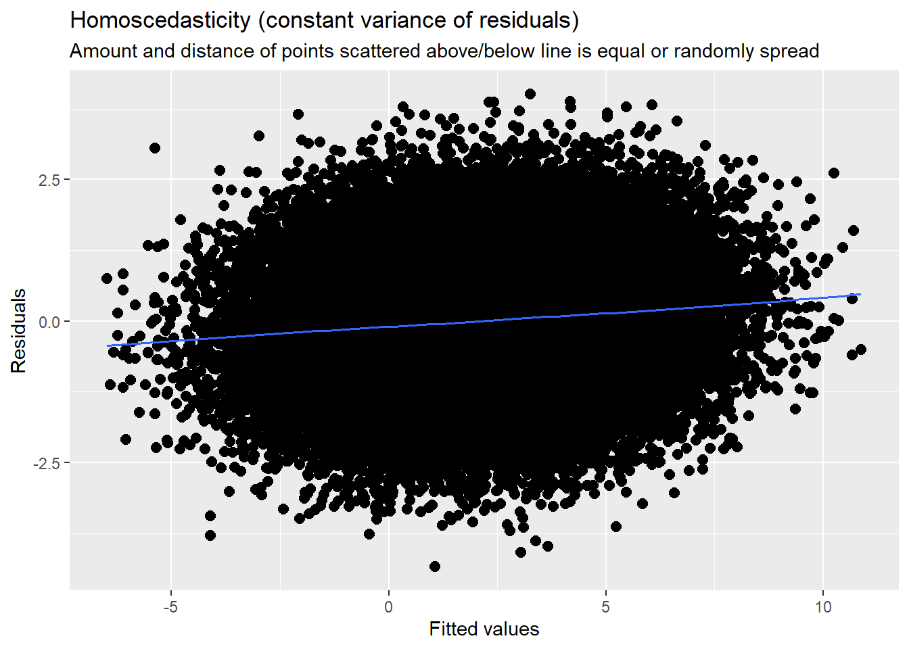 Because of the significant trimming (of non-significant interaction effects), our plot resemble those we have observed throughout the model building process.
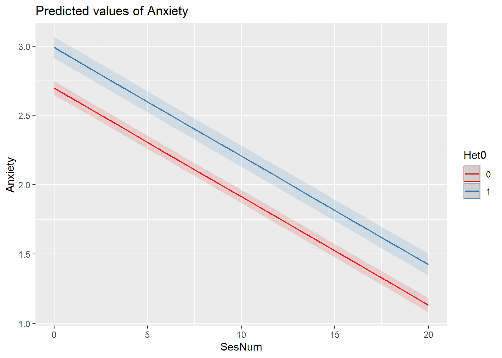
Summary interpretations:
Fixed Effects: Model trimming resulted in the retention of two significant predictor variables. Controlling for sexual identity, anxiety decreased .08 points (p < 0.001) from one session to the next. In turn, controlling for sexual identity, LGBQQ clients were .29 points higher on anxiety (p < 0.001). All interaction terms were trimmed from the model. The figures illustrate the main effects of session number and sexual identity.
Variance Components: The variance components did change from Mod4a to Mod5a. Given that the effects we trimmed were non-significant, it is not surprising that it did not have a significant effect on the model. We should,though, compare our the final model’s \(\sigma ^{2}\) back to the appropriate unconditional means model. This asks, “What within-person’s variance does Mod5a account for, relative to the within-person variance observed in Mod1a?” In parallel, we compare the final model’s \(\tau _{00}\) and \(\tau _{11}\) back to the unconditional growth model (Mod2a).This asks, “What between-person’s intercept and slope variance does Mod5a account for, relative wo those variances observed in Mod2a?”
Here’s the general formula that we can apply across the \(\sigma ^{2}\)(within subjects [L1] variance), \(\tau _{00}\) (between-subjects [L2] intercepts), and \(\tau _{11}\) (between-subjects [L2] slopes)
\[Pseudo R^{2} = \frac{\sigma^2 (unconditional. means(or.growth)model) - \sigma^2(final. model)}{\sigma^{2}(unconditional.means(or.growth)model)}\]
First we assess the relative proportion of within-persons variance accounted for by the final model. Using the \(\sigma ^{2}\) (L1/Within-subjects variance) we compare Mod5a (final, trimmed model) compared to Mod1a (unconditioned means model). In calculating this (all of these, actually), I recognize it did not decrease after Mod2a, but I want to demonstrate it as practice.
## [1] 0.125Relative to the empty model, the final, trimmed model (Mod5a) explains 13% of the within-subjects variance.
Next we assess the relative proportion of between-persons intercept variance accounted for by the final model. Using the \(\tau _{00}\) (L2/intercept variance) we compare Mod5a (final, trimmed model) to Mod2a (unconditional growth model).
## [1] 0.001930502Relative to the unconditional growth model (Mod2a), the final model (Mod5a) explains less than 1% of the variance.
Finally, we assess the relative proportion of between-persons slope variance accounted for by the final model. Using the \(\tau _{11}\) (L2/slope variance), we compare Mod5a (final, trimmed model) to Mod2a (unconditional growth model).
## [1] NaNWith values of zero, the calculation returns an impossible solution. The point, though, is that there has been no claim of variance in the between-persons (L2) slopes.
14.7 Evaluating the “Tenability” (quality) of the Final Model
Graphs of fitted trajectories are essential to communicating results. The dichotomous coding made it possible to plot the growth trajectories according to our focal predictors: SesNum (by session), Het0 (as 0,1 coding), and DRel0 (as 0,1 coding). O
Centering predictors often improves interpretation.
- We centered SesNum, so that 0 would represent the initial value/intercept.
- Centering time-invariant predictors (L2) can also be useful. Much has been written around “grand mean centering” (centering around the entire sample mean) and “group mean centering” (centering around an individual’s mean).
- Although this example did not include time-covarying predictors, I strongly recommend the compositional effects (Enders & Tofighi, 2007) approach where the L1 time-covarying variable is group-mean centered (centered within context) at L1 and then its group aggregate is entered again at L2. I demonstrated this in the lesson on the Nested Within Groups lesson.
14.7.1 The Deviance Statistics
The output at the bottom of the tab-model are a cluster of relative fit indices.
The deviance statistic compares log-likelihood statistics for two models at a time: (a) the current model and (b) a saturated model (e.g., a more general model that fits the sample data perfectly). Deviance quantifies how much worse the current model is in comparison to the best possible model. The deviance is identical to the residual sums of squares used in regression. While you cannot directly interpret any particular deviance statistic, you can compare nested models; the smaller value “wins.”
Two requirements to use the deviance statistic:
- The dataset must be identical. If you have a difference in 1 record in the person-period dataset that is missing or any variable in either model, then the comparison is invalidated.
- A reduced model must be nested within the other. Every parameter must be in both models. The difference is the constraints
- But it’s even more complicated. Remember the FML v. REML distinction/decision?
- If you used FML, the underlying estimation made use of the full sample data. Consequently, the FML deviance statistic describes the fit of the entire model (both fixed and random effects). Thus, you can use the deviance statistics to test hypotheses about any combination of parameters, fixed effects, or variance components.
- If you used RML, the underlying estimation restricted itself fo the sample residuals. Consequently, the the deviance statistic describes only the stochastic portion of the model. Thus, you can use deviance statistics to test hypotheses only about variance components.
We can see the deviance values in the tab-Model and observe if they increase or decrease. The anova() function can formally conduct a Chi-square difference test to tell us if the models are statistically significantly different from each other.
## Data: LfvrLong
## Models:
## Mod1a: Anxiety ~ 1 + (1 | ClientID)
## Mod2a: Anxiety ~ SesNum + (SesNum | ClientID)
## Mod5a: Anxiety ~ SesNum + Het0 + (SesNum | ClientID)
## Mod3a: Anxiety ~ SesNum * Het0 + (SesNum | ClientID)
## Mod4a: Anxiety ~ SesNum * Het0 + SesNum * DRel0 + Het0 * DRel0 + (SesNum | ClientID)
## npar AIC BIC logLik deviance Chisq Df Pr(>Chisq)
## Mod1a 3 243113 243141 -121554 243107
## Mod2a 6 236029 236083 -118009 236017 7090.4634 3 < 0.00000000000000022
## Mod5a 7 235990 236054 -117988 235976 40.9677 1 0.0000000001548
## Mod3a 8 235992 236064 -117988 235976 0.3253 1 0.5685
## Mod4a 11 235996 236095 -117987 235974 2.1376 3 0.5443
##
## Mod1a
## Mod2a ***
## Mod5a ***
## Mod3a
## Mod4a
## ---
## Signif. codes: 0 '***' 0.001 '**' 0.01 '*' 0.05 '.' 0.1 ' ' 1In a manner consistent with the fixed effects, we see that models 2a and 5a are improvements over the more simple models that precede them. If we wanted specific comparisons we could list pairs, for example:
## Data: LfvrLong
## Models:
## Mod5a: Anxiety ~ SesNum + Het0 + (SesNum | ClientID)
## Mod4a: Anxiety ~ SesNum * Het0 + SesNum * DRel0 + Het0 * DRel0 + (SesNum | ClientID)
## npar AIC BIC logLik deviance Chisq Df Pr(>Chisq)
## Mod5a 7 235990 236054 -117988 235976
## Mod4a 11 235996 236095 -117987 235974 2.4628 4 0.6513With \(\chi^2\)(4) = 2.46, \(p\) = 0.651, we see that these Mod4a and Mod5a are not statistically significantly different than each other.
Interpreting deviance stats means you are paying attention to what is different in the model. The effects that are changed are what are different. Recall that if you used RML, you can only use the deviance tests for comparing models where the only diffs are those that occur in the random effects.
14.7.2 Comparing Nonnested Models with Information Criteria
The AIC (Akaike Information Criteria) allow the comparison of the relative goodness of fit of models that are not nested. That is, they can involve different sets of parameters.
Like the deviance statistic, the AIC is based on the log-likelihood statistic. Instead of using the LL itself, the AIC penalizes (e.g., decreases) the LL based on the number of parameters. Why? Adding parameters (even if they have no effect) will increase the LL statistic and decrease the deviance statistic.
As long as two models are fit to the identical same set of data, the AICs and BICs can be compared. The model with the smaller information critera “wins.” There are no established criteria for determining how large the difference is for it to matter. Across our models M5a has the lowest AIC.
14.7.3 Evaluating the Model’s Assumptions
Especially with the proliferation of so many models and comparisons, this can quickly get unwieldy. Singer and Willett (2003) recommed that you examine the assumptions of several initial models (making sure things are looking ok), and then again in any model you explicitly write up. We briefly look at 3 sets of assumptions: functional form, normality, homoschedasticity.
14.7.3.1 Checking functional form
Level 1 We checked these early in the process by examining the empirical growth plots with superimposed OLS-estimated individual change trajectories. We saw that the linear model seemed quite reasonable for many; less so for others.
Level 2 We plotted OLS-estimated individual growth parameters against the two substantive predictors. Similarly, we observed that a linear model would be appropriate for the Het0 and DRel0 predictors.
14.7.3.2 Checking normality
MLMers really like visual inspection of residual distributions. For each raw residual (the one at L1 and two at L2) you can plot values against the associated normal scores. If the distribution is normal, the points form a line. Departures from linearity indicates a departure from normality. We observed these in the diagnostic plots at the testing of each new model.
14.7.3.3 Checking homoscedasticity
This is evaluated by plotting raw residuals against predictors: the L1 residuals against the L1 predictor; the L2 residuals against the L2 predictors. If the assumption holds, residual variability will be approximately equal at every predictor. Similarly, we observed this in the diagnostic plots as we evaluated each model.
14.8 APA Style Writeup
There are a variety of ways to write this up. The Lefevor et al. (2017) writeup is excellent and one worth modeling. I like to collect and consult a variety of write-ups when I draft my own. Here is an example of how I might write it up.
Method/Analytic Strategy
Longitudinal studies produce data with a hierarchical structure in which the repeated measures (level 1 [L1]) are clustered within individuals (level 2 [L2]). Multilevel modeling (MLM) with the R package lme4 (v. 1.1-26) was appropriate to use in this analysis because it allows for the dependent nature of the repeated measures data. Thus, we simultaneously estimated within- and between-person effects. We had one L1 variable, session number, which was centered on the client’s first sesion. Thus, intercepts (i.e., the initial level of a variable) were anxiety levels at the first session (centered on the client’s first sesion) and slopes represented changes in the dependent variable as the session count increased.
L2 variables included sexual and religious identities. Given the large proportion of individuals who identified as heterosexual, dummy coding was used such that heterosexual was coded 0 and LGBQQ was coded 1. Similarly, those who claimed a dominant religion were 1; non-dominant religious affiliations (both named and unnamed) were coded 0. Data was modeled with a linear mixed effects approach with full information maximum likelihood (FML).
A model building approach was used to specify the model (McCoach, 2010; Singer & Willett, 2003). Model 1 was an unconditioned growth model, primarily used to calculate the ICC. We entered the time variable, session number in Model 2. In Model 3 we entered the L2 variable sexual identity as an L2 predictor and cross-level interaction. In Model 4 we entered the L2 variable religious affiliation as an L2 predictor and in cross-level interactions with the other variables. In Model 5 we trimmed nonsignificant predictors. At each stage we tracked the proportionate variance accounted for in our within- and between-subjects variance components.
Preliminary Analyses
Data Preparation ad Missing Data (a mangy draft) Our data set included 64125 observations across five sessions for 12825 clients of university counseling centers. Although our dataset was balanced (five sessions were available for all clients) we used an unstructured form of time (unevenly spaced counseling sessions counted by session number
Distributional characteristics, assumptions, etc. (another mangy draft) Our preliminary analysis included extensive exploratory analyses recommended by Singer and Willett (2003). Not reported here (but available in whatever OSF frame or as a supplement to the journal) this included (a) plotting empirical growth plots for a random sample (20%n* = 30) of the the sample, (b) creating within-person regression models for each person in the dataset and superimposing each person’s fitted regression line on the plot of his/her empircal growth record, and (c) examining the fit of these regressions via the \(R^2\) statistic and an individual estimated residual variance. Further analysis explored differences in the trajectories as a function of sexual identity and religious affiliation. Specifically, we plotted raw and fitted trajectories separately comparing heterosexual and LGBQQ clients and comparing those claiming dominant and nondominant religions. Our observations indicated that it would be appropriate to proceed by specifying a linear growth trajectory.
Primary Analyses We followed Singer and Willett’s (Singer & Willett, 2003) recommendations by creating and reporting on taxonomy of statistical models, where each model in the taxonomy extends a prior model in some sensible way. As shown in Table 1, Model 1 was an unconditional means model where we learned that the average anxiety level at the first session (all participants across all waves) was 2.08 (p < .001). Further, the intraclass correlation suggested that 78% of the variance was between subjects. This supported our decision to use a multilevel approach.
Model 2 was an unconditional growth model; simply adding session number (centered so that the first session equalled 0). In Model 3 we added a focal predictor, sexual identity to predict both intercept and slope at the submodels of the L2 equation. Results suggested that LGBQQ individuals were 0.28 (P < .008) units higher on anxiety; there was no interaction with session number. In Model 4 we added religious affiliation and allowed it to interact with the other variables. There was no additional significance. In Model 5 we trimmed all non-signifciant effects.
Results, depicted in Figure 1, suggested that, controlling for sexual identity, the anxiety level at the first sesion w as 2.70 (p < .001) and decreased by .08 (p < .001) units each session. Controlling for sexual identity, LGBQQ clients’ anxiety was, on average 0.29 units higher (p < .001) throughout the counseling process.
With regard to the model as a whole, 13% of the within-subjects variance in anxiety was explained session number. Relative to the unconditional growth model almost no variance at session one and no variance in the rate of change was explained by sexual identity or religious affiliation. Further, the deviance and AIC statistics supported our decision for retaining only session number and sexual identity.
14.10 Practice Problems
This assignment grows from the lesson on preliminary exploration of longitudinal data and extends it with model specification and evaluation. The suggested practice problem for this lesson is to conduct a longitudinal MLM that includes at least one L1 predictor (ideally one that clocks time), at least one L2 predictor, and a cross-level interaction. The dependent variable should be time-varying (i.e., one of the L1, repeated measures) and the measurement scale should be continuous. If the L1 predictor is time, it should be on a sensible metric as described in the lecture (e.g., should have a zero/start point and never go backwards). The L2 variable can be categorical or continuous. Specific steps are identified in the grading rubric.
14.10.1 Problem #1: Rework the research vignette as demonstrated, but change the random seed
If this topic feels a bit overwhelming, simply change the random seed in the data simulation, then rework the problem. This should provide minor changes to the data (maybe in the second or third decimal point), but the results will likely be very similar.
14.10.2 Problem #2: Rework the research vignette, but use the depression variable as an outcome
In the Bonus Track of the prior lesson I provided the code to simulate this data where depression was the dependent variable. Repeat this analysis with that data.
14.10.3 Problem #3: Use other data that is available to you
Conduct a multilevel model with data to which you have access. This could include data you simulate on your own or from a published article.
14.10.4 Grading Rubric
| Assignment Component | ||
|---|---|---|
| 1. Assign each variable to the L1 or L2 roles | 5 | _____ |
| 2. Provide three examples of data exploration: an unfitted model, a model fitted with a linear growth trajectory, and the fitted (or unfitted) data identified by the L2 predictor | 5 | _____ |
| 3. Model 1: unconditional means model (i.e., empty model) | 5 | _____ |
| 4. Model 2: unconditional growth model (i.e., includes the time variable) | 5 | _____ |
| 5. Model 3: focal predictor and cross-level interaction | 5 | _____ |
| 6. Model 4 and/or 5: more predictors and/or trimming (if no more predictors) | 5 | _____ |
| 7. Calculate the proportionate reduction of variance (\(pseudoR^2\)) for each progression | ||
| 8. Create a tab_model table with the final set of models | 5 | _____ |
| 9. Create a figure to represent the result | 5 | _____ |
| 10. APA Style writeup | 5 | _____ |
| 11. Explanation to grader | 5 | _____ |
| Totals | 50 | _____ |